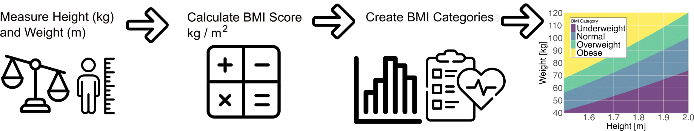
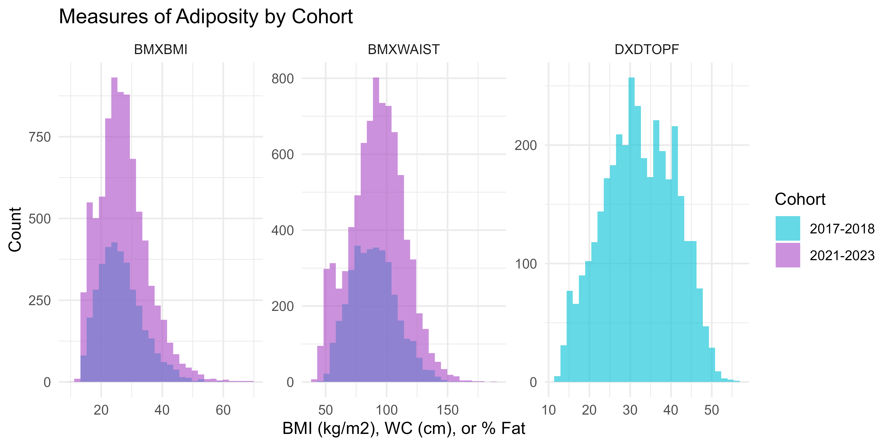
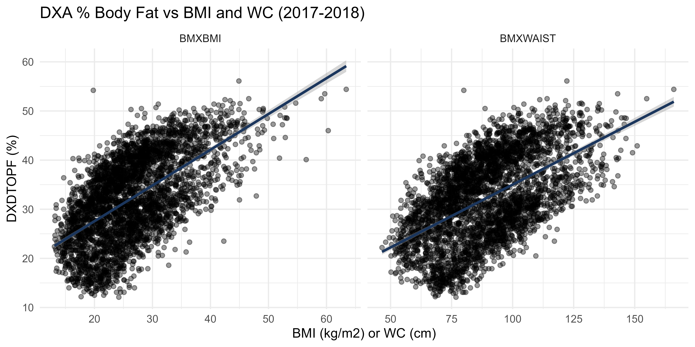
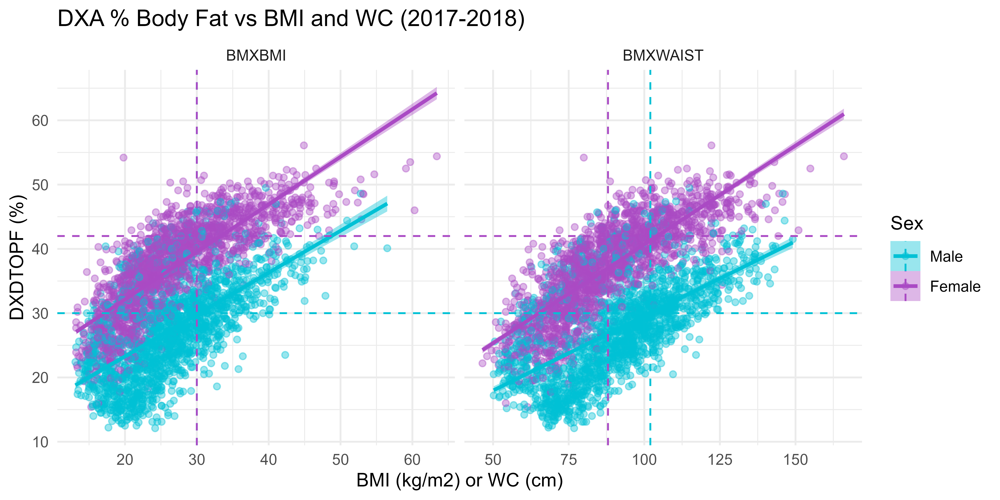
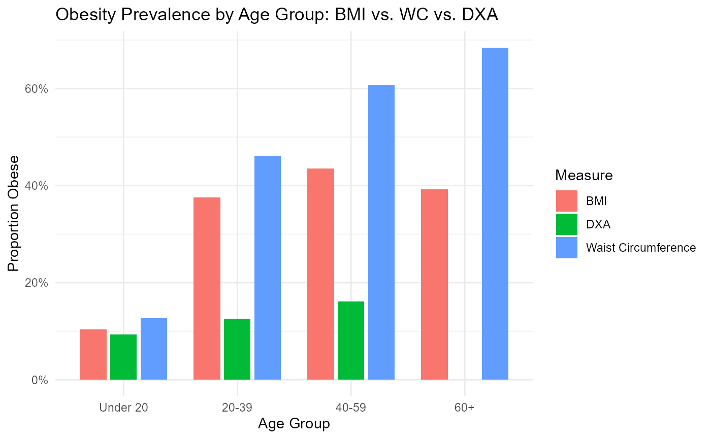
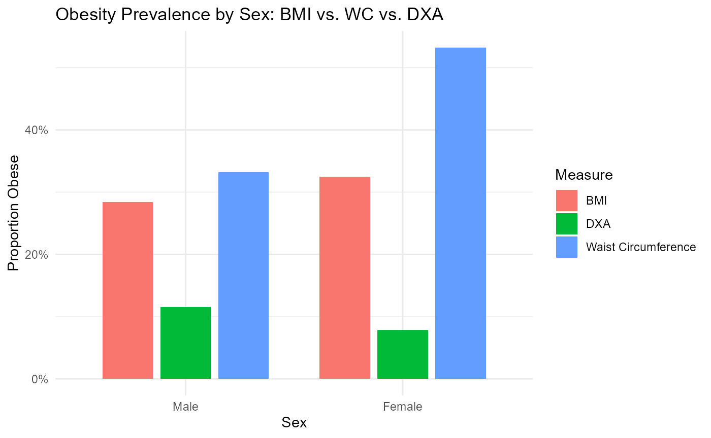
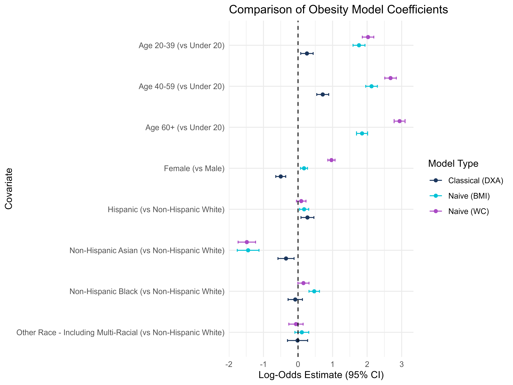
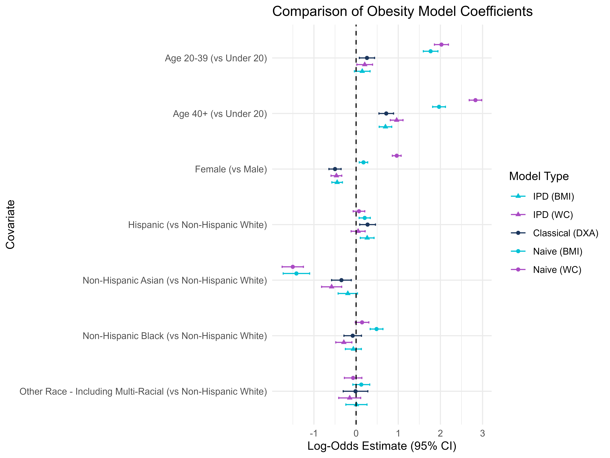

Unit 02: Different Measures of Adiposity
Stephen Salerno
June 24, 2025
Source:vignettes/Unit02_BMIvDXA.Rmd
Unit02_BMIvDXA.RmdBackground and Motivation
How Do We Measure Adiposity?
Body mass index (BMI) is the most commonly used anthropometric proxy for adiposity in epidemiologic studies and clinical settings. It is simple to calculate, weight in kilograms divided by height in meters squared, and has well-established cut-points for classifying patients as overweight or obese. However, BMI does not distinguish between fat mass and lean mass, nor does it capture fat distribution (visceral versus subcutaneous). As a result, BMI can both under- and over-estimate true adiposity in key subgroups. For example muscular individuals (e.g., athletes) may be misclassified as “obese,” while older adults with sarcopenia (low muscle mass) may fall below BMI thresholds despite having high percent body fat.

Waist circumference (WC) is another simple measure of central adiposity that may better reflect visceral fat, a key driver of metabolic risk. Standard WC cut-points (e.g., ≥ 102 cm in men, ≥ 88 cm in women) identify individuals at increased cardiometabolic risk, even when their BMI is in the normal or overweight range. Yet WC also does not directly quantify total body fat and is influenced by body build, posture, and measurement error.
Dual-energy X-ray absorptiometry (DXA) provides a more accurate “gold-standard” measure of body composition by directly quantifying total and regional fat and lean mass. DXA-derived percent fat thresholds (e.g., > 30% in men, > 42% in women) have been validated against metabolic outcomes. Comparing BMI-based obesity (BMI ≥ 30 kg/m²) and WC-based obesity (WC ≥ 102 cm men, ≥ 88 cm women) with DXA-defined obesity reveals where and how often these common anthropometric proxies misclassify true adiposity.
It is worth noting that BMI is often defended as a valid measure for population-level inference, under the assumption that individual-level misclassification errors are harmless when estimating group-level trends. This justification appears frequently in epidemiology, where BMI is treated as a convenient stand-in for adiposity in regression models. But this reasoning masks a deeper issue central to the IPD framework: BMI is itself a prediction model, a crude one, but a model nonetheless. It encodes a deterministic function (weight divided by height squared) to approximate an unobserved latent quantity (body fat), and like any prediction model, it introduces systematic biases that may not vanish with aggregation. IPD adopts a prediction-agnostic perspective: whether the surrogate is a simple index like BMI or a high-dimensional neural network, the challenge is the same: how to draw valid statistical inference when the outcome is a model-based proxy. By treating BMI as a prediction rather than a ground truth, we clarify the role of uncertainty, calibration, and correction, and demonstrate how IPD methods can help recover valid estimates even when only such surrogates are available.
In this module, we will use data from the National Health and Nutrition Examination Survey (NHANES) to:
- Load BMI, WC, and DXA-based measures of adiposity and their associated features
-
Define obesity by three standards:
- BMI (≥ 30 kg/m²)
- Waist circumference (men ≥ 102 cm; women ≥ 88 cm)
- DXA % body fat (> 30% men; > 42% women)
- Visualize misclassification rates overall and by age, sex, and race/ethnicity
-
Calibrate both BMI and WC-based obesity measures to
DXA using the
ipdpackage - Discuss implications for research and practice
By the end, we may have a better understanding of the strengths and limitations of BMI and WC as proxies for adiposity, know how to assess their sensitivity and specificity versus DXA, and be equipped to correct for measurement error using IPD when only BMI/WC are available.
NHANES
The National Health and Nutrition Examination Survey (NHANES) is a nationally representative program conducted by the U.S. Centers for Disease Control and Prevention that combines in-home interviews with standardized physical examinations and laboratory tests to assess the health and nutritional status of Americans. Initiated in the early 1960s and carried out continuously since 1999 in two-year cycles, NHANES informs public health policy, tracks trends in chronic conditions and risk factors, and support research on diet, disease, and health disparities. NHANES provides:
-
DXA-measured percent body fat
(
DXDTOPF) for a subset of participants -
BMI (
BMXBMI), derived from measured height and weight -
Waist circumference (
BMXWAIST), a potential measure of central fat
As DXA scans are costly and time-consuming, many studies only record
BMI and WC. When our scientific question involves true adiposity (e.g.,
its association with certain risk factors), but we only have BMI and WC
in most participants, we can use ipd to correct our
downstream inference on % body fat to account for the fact that these
proxies are being used in place of the true DXA measurement.
Note: DXA scans were collected through the 2017 - 2018 NHANES cycle but were suspended during the COVID-19 pandemic. As a result, subsequent waves, including the August 2021 - August 2023 data, do not include DXA measurements. In this tutorial, we will therefore:
- Use the 2017-2018 wave as our labeled data
(which includes
DXDTOPF).
- Use IPD to correct our inference when estimating associations between % body fat and other covariates in the absence of direct DXA measurements in the unlabeled August 2021 - August 2023 wave.
This approach lets us leverage historic DXA data to predict adiposity in more recent participants, enabling unbiased inference across pre- and post-pandemic cohorts.
Data Preparation and Exploration
We will now load a pre-compiled NHANES dataset, explore key variables (BMI, waist circumference, DXA % body fat) by cohort, and define obesity categories for later misclassification analyses and IPD.
Loading the Pre-Compiled NHANES Data
For convenience, we prepared and saved a data file,
data/NHANES.rda, which contains a tibble,
NHANES, with the following columns:
-
SEQN- Respondent ID
-
Cohort- Factor: “2017-2018” or “2021-2023”
-
Age- Factor: “Under 20”, “20-39”, “40-59”, or “60+” -
Sex- Factor: “Male” or “Female”
-
Race- Factor: “Non-Hispanic White”, “Hispanic”, “Non-Hispanic Black”, “Non-Hispanic Asian”, or “Other Race - Including Multi-Racial” -
Smoking- Factor: “Never Smoker”, “Former Smoker”, or “Current Smoker” -
Education- Factor: “Less than high school”, “High school graduate/GED or equivalent”, “Some college or AA degree”, “College graduate or above”, or “Refused/Unknown” -
BMXBMI- Body Mass Index (kg/m²)
-
BMXWAIST- Waist Circumference (cm)
-
DXDTOPF- DXA Percent Body Fat (only measured in 2017-2018;NAin 2021-2023) -
WTMEC4YR- Four-Year Adjusted Survey Weights
Note: The the code used to produce this dataset is
available in this repository at inst/NHANES_DATA.R.
Install and Load the Necessary Packages
# Install these packages if you have not already:
# install.packages(c("ipd", "broom", "scales", "tidyverse"))
library(ipd) # Inference with predicted data
library(broom) # Convert model objects (lm, glm, ipd) into tidy data.frames
library(scales) # Formatting scales and labels for ggplot2
library(tidyverse) # Meta‐package for data manipulation and visualizationLoad the Data
We first load the prepared dataset and take a look at its features:
# Load the dataset
load("data/NHANES.RData")
# Inspect its structure
glimpse(NHANES)
#> Rows: 11,782
#> Columns: 11
#> $ SEQN <dbl> 93706, 93707, 93711, 93712, 93714, 93717, 93719, 93725, 9372…
#> $ Cohort <fct> 2017-2018, 2017-2018, 2017-2018, 2017-2018, 2017-2018, 2017-…
#> $ Age <fct> Under 20, Under 20, 40-59, Under 20, 40-59, 20-39, Under 20,…
#> $ Sex <fct> Male, Male, Male, Male, Female, Male, Female, Female, Male, …
#> $ Race <fct> Non-Hispanic Asian, Other Race - Including Multi-Racial, Non…
#> $ Smoking <fct> NA, NA, NA, NA, Former Smoker, NA, NA, NA, NA, NA, NA, NA, N…
#> $ Education <fct> Refused/Unknown, Refused/Unknown, College graduate or above,…
#> $ BMXBMI <dbl> 21.5, 18.1, 21.3, 19.7, 39.9, 24.5, 26.0, 16.1, 27.6, 28.6, …
#> $ BMXWAIST <dbl> 79.3, 64.1, 86.6, 72.0, 118.4, 86.2, 86.0, 66.8, 101.5, 96.3…
#> $ DXDTOPF <dbl> 22.7, 19.0, 22.8, 16.7, 42.1, 20.4, 33.4, 26.9, 29.4, 22.8, …
#> $ WTMEC4YR <dbl> 4361.720, 3532.305, 6195.460, 15168.327, 7739.791, 30058.968…Overview by Cohort
We can now get a sense of the different cohorts and our variables of interest:
DXA Missingness
NHANES |>
group_by(Cohort) |>
summarize(
total = n(),
pct_missing = mean(is.na(DXDTOPF)) * 100)
#> # A tibble: 2 × 3
#> Cohort total pct_missing
#> <fct> <int> <dbl>
#> 1 2017-2018 3617 0
#> 2 2021-2023 8165 100Expected:
- 2017-2018: 100% of DXA (
DXDTOPF) present (using those with mobile examination center (MEC) tests and MEC weights).- 2021-2023: 100% missing for
DXDTOPF(no DXA data post-pandemic).
Descriptive Statistics
BMI, Waist Circumference, and DXA % Fat
NHANES |>
group_by(Cohort) |>
summarize(
BMI_mean = mean(BMXBMI),
BMI_sd = sd(BMXBMI),
WC_mean = mean(BMXWAIST),
WC_sd = sd(BMXWAIST),
DXA_mean = mean(DXDTOPF),
DXA_sd = sd(DXDTOPF)
) |>
pivot_longer(-Cohort)|>
separate(name, c("Metric", "Statistic")) |>
pivot_wider(names_from = Statistic, values_from = value)
#> # A tibble: 6 × 4
#> Cohort Metric mean sd
#> <fct> <chr> <dbl> <dbl>
#> 1 2017-2018 BMI 26.5 7.24
#> 2 2017-2018 WC 89.3 18.8
#> 3 2017-2018 DXA 32.3 8.70
#> 4 2021-2023 BMI 27.1 7.96
#> 5 2021-2023 WC 92.1 22.0
#> 6 2021-2023 DXA NA NADistributions of Continuous Measures of Adiposity
NHANES |>
pivot_longer(c(BMXBMI, BMXWAIST, DXDTOPF)) |>
ggplot(aes(x = value, fill = Cohort)) +
facet_wrap(~ name, scales = "free") +
geom_histogram(alpha = 0.6, position = "identity", bins = 30) +
scale_fill_manual(values = c("#00C1D5", "#AA4AC4")) +
labs(
title = "Measures of Adiposity by Cohort",
x = "BMI (kg/m2), WC (cm), or % Fat",
y = "Count") +
theme_minimal()
DXA vs Anthropometry in 2017-2018
Only the 2017-2018 cohort has DXDTOPF, so we examine how
BMI and WC relate to true % body fat among the study participants in
this wave:
NHANES |>
filter(Cohort == "2017-2018") |>
pivot_longer(c(BMXBMI, BMXWAIST)) |>
ggplot(aes(x = value, y = DXDTOPF)) +
facet_wrap(~ name, scales = "free_x") +
geom_point(alpha = 0.4) +
geom_smooth(method = "lm", color = "#1B365D") +
labs(
title = "DXA % Body Fat vs BMI and WC (2017-2018)",
x = "BMI (kg/m2) or WC (cm)", y = "DXDTOPF (%)") +
theme_minimal()
Let’s also compare these measures by Sex. We can also add reference lines to see where the measure-specific obesity cut-offs would be:
cutoffs <- tibble(
name = c("BMXBMI", "BMXBMI", "BMXWAIST", "BMXWAIST"),
Sex = c("Male", "Female", "Male", "Female"),
xint = c(30, 30, 102, 88),
yint = c(30, 42, 30, 42)
)
NHANES |>
filter(Cohort == "2017-2018") |>
pivot_longer(c(BMXBMI, BMXWAIST)) |>
ggplot(aes(x = value, y = DXDTOPF, group = Sex, fill = Sex, color = Sex)) +
facet_wrap(~ name, scales = "free_x") +
geom_point(alpha = 0.4) +
geom_smooth(method = "lm") +
geom_vline(data = cutoffs,
aes(xintercept = xint, color = Sex), linetype = "dashed") +
geom_hline(data = cutoffs,
aes(yintercept = yint, color = Sex), linetype = "dashed") +
scale_fill_manual(values = c("#00C1D5", "#AA4AC4")) +
scale_color_manual(values = c("#00C1D5", "#AA4AC4")) +
labs(
title = "DXA % Body Fat vs BMI and WC (2017-2018)",
x = "BMI (kg/m2) or WC (cm)", y = "DXDTOPF (%)") +
theme_minimal()
Interpretation:
- There is a strong positive linear relationship between both BMI and WC with DXA body fat percentage.
- This relationship is apparent across both sexes, but slopes differ, indicating different body composition patterns between males and females.
- The presence of individuals in mismatched quadrants (e.g., high BMI but low body fat) suggests limitations in using BMI/WC alone as diagnostic tools, particularly across sexes.
Defining Obesity Categories
Let us create three binary indicators:
-
obese_BMI: BMI ≥ 30 kg/m² -
obese_WC: WC ≥ 102 cm (men) or ≥ 88 cm (women) -
obese_DXA: DXA % Fat > 30% (men) or > 42% (women)
NHANES <- NHANES |>
mutate(
obese_BMI = BMXBMI >= 30,
obese_WC = case_when(
Sex == "Male" & BMXWAIST >= 102 ~ TRUE,
Sex == "Female" & BMXWAIST >= 88 ~ TRUE,
.default = FALSE),
obese_DXA = case_when(
is.na(DXDTOPF) ~ NA,
Sex == "Male" & DXDTOPF > 30 ~ TRUE,
Sex == "Female" & DXDTOPF > 42 ~ TRUE,
.default = FALSE)
)Misclassification in 2017-2018
Compare BMI-defined vs DXA-defined obesity:
# Overall
NHANES |>
filter(Cohort == "2017-2018") |>
count(obese_DXA, obese_BMI) |>
mutate(percent = sprintf("%.1f%%", 100 * n / sum(n)))
#> obese_DXA obese_BMI n percent
#> 1 FALSE FALSE 2180 60.3%
#> 2 FALSE TRUE 307 8.5%
#> 3 TRUE FALSE 415 11.5%
#> 4 TRUE TRUE 715 19.8%
# By Sex
NHANES |>
filter(Cohort == "2017-2018") |>
count(Sex, obese_DXA, obese_BMI) |>
group_by(Sex) |>
mutate(percent = sprintf("%.1f%%", 100 * n / sum(n))) |>
ungroup()
#> # A tibble: 8 × 5
#> Sex obese_DXA obese_BMI n percent
#> <fct> <lgl> <lgl> <int> <chr>
#> 1 Male FALSE FALSE 1003 56.1%
#> 2 Male FALSE TRUE 138 7.7%
#> 3 Male TRUE FALSE 302 16.9%
#> 4 Male TRUE TRUE 345 19.3%
#> 5 Female FALSE FALSE 1177 64.4%
#> 6 Female FALSE TRUE 169 9.2%
#> 7 Female TRUE FALSE 113 6.2%
#> 8 Female TRUE TRUE 370 20.2%And WC-defined vs DXA-defined:
# Overall
NHANES |>
filter(Cohort == "2017-2018") |>
count(obese_DXA, obese_WC) |>
mutate(percent = sprintf("%.1f%%", 100 * n / sum(n)))
#> obese_DXA obese_WC n percent
#> 1 FALSE FALSE 1959 54.2%
#> 2 FALSE TRUE 528 14.6%
#> 3 TRUE FALSE 319 8.8%
#> 4 TRUE TRUE 811 22.4%
# By Sex
NHANES |>
filter(Cohort == "2017-2018") |>
count(Sex, obese_DXA, obese_WC) |>
group_by(Sex) |>
mutate(percent = sprintf("%.1f%%", 100 * n / sum(n))) |>
ungroup()
#> # A tibble: 8 × 5
#> Sex obese_DXA obese_WC n percent
#> <fct> <lgl> <lgl> <int> <chr>
#> 1 Male FALSE FALSE 1020 57.0%
#> 2 Male FALSE TRUE 121 6.8%
#> 3 Male TRUE FALSE 286 16.0%
#> 4 Male TRUE TRUE 361 20.2%
#> 5 Female FALSE FALSE 939 51.3%
#> 6 Female FALSE TRUE 407 22.3%
#> 7 Female TRUE FALSE 33 1.8%
#> 8 Female TRUE TRUE 450 24.6%Interpretation:
BMI vs. DXA:
- The misclassification rate is 8.5% + 11.5% = 20.0%, with BMI underestimating DXA-defined obesity more than it overestimates it.
- By sex, BMI misses many obese males per DXA, indicating underestimation of adiposity, but it overcalls obesity more often than it misses it in females.
- BMI is less sensitive for men, while women are more likely to be labeled obese by BMI even when not by DXA, indicating reduced specificity.
WC vs. DXA:
- The misclassification rate is 14.6% + 8.8% = 23.4%, with WC slightly overestimating obesity more than it underestimates, opposite to BMI.
- WC underestimates DXA-defined obesity in males, similar to BMI, but overestimates obesity in females, often classifying non-obese women as obese.
- For women, WC has higher sensitivity but lower specificity than BMI, as it detects more DXA-obese individuals but also overcalls many who are not.
Additional Stratified Comparisons: Grouped Bar Charts by Measure
Let us reshape the data to long format so that BMI, WC, and DXA-defined obesity are all in one “Measure” column:
# Assume NHANES is already loaded and has Cohort, Age, Sex, Race,
# and the three obesity variables
nhanes_long <- NHANES |>
select(Cohort, Age, Sex, Race, obese_BMI, obese_WC, obese_DXA) |>
pivot_longer(
cols = starts_with("obese_"),
names_to = "Measure",
values_to = "Obese"
) |>
mutate(
Measure = recode(Measure,
obese_BMI = "BMI",
obese_WC = "Waist Circumference",
obese_DXA = "DXA"
)
) |>
filter(!is.na(Obese))By Age Group
prop_age <- nhanes_long |>
group_by(Cohort, Age, Measure, Obese) |>
summarize(n = n(), .groups = "drop") |>
group_by(Cohort, Age, Measure) |>
mutate(prop = n / sum(n))
ggplot(prop_age, aes(x = Age, y = prop, fill = Obese)) +
geom_col(position = "stack") +
facet_grid(Cohort ~ Measure) +
scale_y_continuous(labels = percent_format(accuracy = 1)) +
scale_fill_manual(values = c("#00C1D5", "#AA4AC4")) +
scale_color_manual(values = c("#00C1D5", "#AA4AC4")) +
labs(
x = "Age Group",
y = "Percent",
fill = "Obesity Status",
title = "Obesity Classification by Age, Cohort, and Measure"
) +
theme_minimal()
By Sex
prop_sex <- nhanes_long |>
group_by(Cohort, Sex, Measure, Obese) |>
summarize(n = n(), .groups = "drop") |>
group_by(Cohort, Sex, Measure) |>
mutate(prop = n / sum(n))
ggplot(prop_sex, aes(x = Sex, y = prop, fill = Obese)) +
geom_col(position = "stack") +
facet_grid(Cohort ~ Measure) +
scale_y_continuous(labels = percent_format(accuracy = 1)) +
scale_fill_manual(values = c("#00C1D5", "#AA4AC4")) +
scale_color_manual(values = c("#00C1D5", "#AA4AC4")) +
labs(
x = "Sex",
y = "Percent",
fill = "Obesity Status",
title = "Obesity Classification by Sex, Cohort, and Measure"
) +
theme_minimal()
By Race/Ethnicity
prop_race <- nhanes_long |>
group_by(Cohort, Race, Measure, Obese) |>
summarize(n = n(), .groups = "drop") |>
group_by(Cohort, Race, Measure) |>
mutate(prop = n / sum(n))
ggplot(prop_race, aes(x = Race, y = prop, fill = Obese)) +
geom_col(position = "stack") +
facet_grid(Cohort ~ Measure) +
scale_y_continuous(labels = percent_format(accuracy = 1)) +
scale_fill_manual(values = c("#00C1D5", "#AA4AC4")) +
scale_color_manual(values = c("#00C1D5", "#AA4AC4")) +
labs(
x = "Race / Ethnicity",
y = "Percent",
fill = "Obesity Status",
title = "Obesity Classification by Race/Ethnicity, Cohort, and Measure"
) +
theme_minimal() +
theme(axis.text.x = element_text(angle = 45, hjust = 1))
Discussion
BMI misclassification varies systematically across subgroups:
- Age: Young adults (18-34) often have lower lean mass, so normal-BMI individuals can still have high body fat (“normal-weight obesity”).
- Sex: Women generally have higher percent-fat at the same BMI; sex-specific DXA thresholds help adjust for this.
- Race/Ethnicity: Differences in body composition and fat distribution mean that a single BMI cut-point may not correspond to the same adiposity level across groups.
Implications: Reliance on BMI alone can bias epidemiologic associations with true adiposity-driven outcomes (e.g., diabetes, cardiovascular disease). When DXA or other body-composition measures are impractical, consider calibration equations or subgroup-specific BMI thresholds.
Next: we will split the combined NHANES data into
labeled (2017-2018 with DXDTOPF) and
unlabeled (2021-2023 without DXA), and then proceed
with IPD using BMI or WC as our proxy.
Demographic Associations: Naive vs Classical vs IPD
Naive vs Classical vs IPD Inference
We are interested in studying the association between true percent body fat (DXA % fat) and risk factors such as age, sex, and race. We model the binary obesity outcome (DXA-defined “true” vs BMI/WC “proxy”) as a function of Age, Sex, and Race using logistic regression:
-
Naive: proxy-only model on unlabeled data
(2021-2023)
-
Classical: true-only model on labeled data
(2017-2018)
- IPD: combine both while correcting for proxy error
Naive versus Classical Regressions
We fit:
-
Naive-BMI:
lm(BMI ~ Age + Sex + Race, data = unlabeled) -
Naive-WC:
lm(WC ~ Age + Sex + Race, data = unlabeled) -
Classical:
lm(DXDTOPF ~ Age + Sex + Race, data = labeled)
For the naive method, we treat BMI- and WC-based obesity (our ’predictions) as the true outcomes, fit on the unlabeled participants:
# Naive on unlabeled using BMI
naive_bmi_fit <- glm(obese_BMI ~ Age + Sex + Race,
family = binomial, data = unlabeled)
naive_bmi_df <- broom::tidy(naive_bmi_fit) |>
mutate(method = "Naive (BMI)")
# Naive on unlabeled using WC
naive_wc_fit <- glm(obese_WC ~ Age + Sex + Race,
family = binomial, data = unlabeled)
naive_wc_df <- broom::tidy(naive_wc_fit) |>
mutate(method = "Naive (WC)")Interpretation:
- Because we ‘predicted’ obesity using BMI or WC, the “naive” coefficient are biased and the confidence intervals are artifically too narrow.
For the classical approach, we fit the true model on the labeled subset (with actual DXA % fat). That is:
# Classical on labeled using DXA
class_fit <- glm(obese_DXA ~ Age + Sex + Race,
family = binomial, data = labeled)
class_df <- broom::tidy(class_fit) |>
mutate(method = "Classical (DXA)")
# Combine
coef_df <- bind_rows(naive_bmi_df, naive_wc_df, class_df) |>
filter(term != "(Intercept)") |>
mutate(
term = recode(term,
"Age20-39" = "Age 20-39 (vs Under 20)",
"Age40-59" = "Age 40-59 (vs Under 20)",
"Age60+" = "Age 60+ (vs Under 20)",
"SexFemale" = "Female (vs Male)",
"RaceNon-Hispanic Black" = "Non-Hispanic Black (vs Non-Hispanic White)",
"RaceNon-Hispanic Asian" = "Non-Hispanic Asian (vs Non-Hispanic White)",
"RaceHispanic" = "Hispanic (vs Non-Hispanic White)",
"RaceOther Race - Including Multi-Racial" = "Other Race - Including Multi-Racial (vs Non-Hispanic White)"
),
method = factor(method, levels = c("Classical (DXA)", "Naive (BMI)", "Naive (WC)"))
)
# Forest plot
ggplot(coef_df, aes(x = estimate, y = term, color = method)) +
geom_point(position = position_dodge(width = 0.6)) +
geom_errorbarh(aes(xmin = estimate - 1.96 * std.error,
xmax = estimate + 1.96 * std.error),
height = 0.2,
position = position_dodge(width = 0.6)) +
geom_vline(xintercept = 0, linetype = "dashed") +
scale_y_discrete(limits = rev) +
scale_fill_manual(values = c("#1B365D", "#00C1D5", "#AA4AC4")) +
scale_color_manual(values = c("#1B365D", "#00C1D5", "#AA4AC4")) +
labs(
x = "Log-Odds Estimate (95% CI)",
y = "Covariate",
title = "Comparison of Obesity Model Coefficients",
color = "Model Type"
) +
theme_minimal()
How to interpret these results?
Notice the differences in significance and magnitude, even direction/sign change depending on the measure of obesity used!
Age Groups (vs Under 20): All age groups have positive coefficients, indicating higher odds of DXA-defined obesity with age, but naive BMI and WC show even larger positive estimates, suggesting that BMI and WC may over-classify obesity in older adults compared to DXA.
Sex (Female vs Male): DXA shows a negative association, while BMI and WC have uch larger effect sizes, particularly for WC, implying that WC-based obesity strongly overclassifies women as obese relative to DXA.
Race/Ethnicity (vs Non-Hispanic White): BMI/WC models show larger effects in Non-Hispanic Black participants, again hinting that BMI and WC may overestimate obesity in this group, while the opposite is true for Non-Hispanic Asian participants.
IPD Corrections
We now apply IPD to leverage all participants
(labeled + unlabeled) while adjusting for prediction error. We run two
IPD analyses, one using BMI as our ‘f’ and one
using WC.
A note on two calling styles:
We can either provide a single, combined dataset to the
dataargument and the name of the column that gives the set labels inlabel:ipd_bmi_1 <- ipd( formula = obese_DXA - obese_BMI ~ Age + Sex + Race, data = combined, label = “set_label”, model = “logistic”, method = “pspa” )
or we can provide the labeled set to
dataand the unlabeled set tounlabeled_dataseparately:ipd_bmi_2 <- ipd( formula = obese_DXA - obese_BMI ~ Age + Sex + Race, data = labeled, unlabeled_data = unlabeled, model = “logistic”, method = “pspa” )
Now we can try to run the IPD model:
# Note: This code chunk results in an error, but we have an informative warning
# We can try running it and see!
# ipd_bmi_fit <- ipd(
# formula = obese_DXA - obese_BMI ~ Age + Sex + Race,
# method = "pspa",
# model = "logistic",
# data = combined,
# label = "set_label"
# )
#
# ipd_wc_fit <- ipd(
# formula = obese_DXA - obese_WC ~ Age + Sex + Race,
# method = "pspa",
# model = "logistic",
# data = labeled,
# unlabeled_data = unlabeled
# )We get an informative warning:
Warning in .warn_differing_levels(inp$data_l, inp$data_u, factor_vars): Differing factor levels between labeled and unlabeled data:
Warning: - Age: labeled = [Under 20, 20-39, 40-59] unlabeled = [Under 20, 20-39, 40-59, 60+]
We can see that the labeled subset does not include
any "60+" observations, but IPD expects the same factor
levels in both sets in order to fit the model using all the data. To fix
this, let us refactor both the labeled and unlabeled
data so they have consistent age categories:
# Recode age
NHANES2 <- NHANES |>
mutate(Age_recode = fct_collapse(Age, `40+` = c("40-59", "60+")))
# Split NHANES into labeled (DXA available) vs unlabeled
labeled2 <- NHANES2 |>
filter(Cohort == "2017-2018") |>
select(obese_DXA, obese_BMI, obese_WC, Age_recode, Sex, Race)
unlabeled2 <- NHANES2 |> filter(Cohort == "2021-2023") |>
select(obese_DXA, obese_BMI, obese_WC, Age_recode, Sex, Race)
# Stack for IPD
combined2 <- bind_rows(
labeled2 |> mutate(set_label = "labeled"),
unlabeled2 |> mutate(set_label = "unlabeled")
)Now let us rerun ipd::ipd() and compare our results to
the Naive and Classical models:
# Note: This code chunk now runs without error!
ipd_bmi_fit <- ipd(
formula = obese_DXA - obese_BMI ~ Age_recode + Sex + Race,
method = "pspa",
model = "logistic",
data = combined2,
label = "set_label"
)
ipd_wc_fit <- ipd(
formula = obese_DXA - obese_WC ~ Age_recode + Sex + Race,
method = "pspa",
model = "logistic",
data = labeled2,
unlabeled_data = unlabeled2
)
# Collect results using the tidy() method
ipd_bmi_df <- tidy(ipd_bmi_fit) |>
mutate(method = "IPD (BMI)")
ipd_wc_df <- tidy(ipd_wc_fit) |>
mutate(method = "IPD (WC)")
# Rerun previous models
# Naive on unlabeled using BMI
naive_bmi_fit <- glm(obese_BMI ~ Age_recode + Sex + Race,
family = binomial, data = unlabeled2)
naive_bmi_df <- broom::tidy(naive_bmi_fit) |>
mutate(method = "Naive (BMI)")
# Naive on unlabeled using WC
naive_wc_fit <- glm(obese_WC ~ Age_recode + Sex + Race,
family = binomial, data = unlabeled2)
naive_wc_df <- broom::tidy(naive_wc_fit) |>
mutate(method = "Naive (WC)")
# Classical on labeled using DXA
class_fit <- glm(obese_DXA ~ Age_recode + Sex + Race,
family = binomial, data = labeled2)
class_df <- broom::tidy(class_fit) |>
mutate(method = "Classical (DXA)")
# Combine
coef_df <- bind_rows(
ipd_bmi_df, ipd_wc_df, naive_bmi_df, naive_wc_df, class_df) |>
filter(term != "(Intercept)") |>
mutate(
term = recode(term,
"Age_recode20-39" = "Age 20-39 (vs Under 20)",
"Age_recode40+" = "Age 40+ (vs Under 20)",
"SexFemale" = "Female (vs Male)",
"RaceNon-Hispanic Black" = "Non-Hispanic Black (vs Non-Hispanic White)",
"RaceNon-Hispanic Asian" = "Non-Hispanic Asian (vs Non-Hispanic White)",
"RaceHispanic" = "Hispanic (vs Non-Hispanic White)",
"RaceOther Race - Including Multi-Racial" = "Other Race - Including Multi-Racial (vs Non-Hispanic White)"
),
method = factor(method,
levels = c("IPD (BMI)", "IPD (WC)",
"Classical (DXA)", "Naive (BMI)", "Naive (WC)"))
)
# Forest plot
ggplot(coef_df, aes(x = estimate, y = term,
color = method, fill = method, shape = method)) +
geom_point(position = position_dodge(width = 0.6)) +
geom_errorbarh(aes(xmin = estimate - 1.96 * std.error,
xmax = estimate + 1.96 * std.error),
height = 0.2,
position = position_dodge(width = 0.6)) +
geom_vline(xintercept = 0, linetype = "dashed") +
scale_y_discrete(limits = rev) +
scale_fill_manual(
values = c(
"Classical (DXA)" = "#1B365D",
"Naive (BMI)" = "#00C1D5",
"Naive (WC)" = "#AA4AC4",
"IPD (BMI)" = "#00C1D5",
"IPD (WC)" = "#AA4AC4"
)
) +
scale_color_manual(
values = c(
"Classical (DXA)" = "#1B365D",
"Naive (BMI)" = "#00C1D5",
"Naive (WC)" = "#AA4AC4",
"IPD (BMI)" = "#00C1D5",
"IPD (WC)" = "#AA4AC4"
)
) +
scale_shape_manual(
values = c(
"Classical (DXA)" = 16,
"Naive (BMI)" = 16,
"Naive (WC)" = 16,
"IPD (BMI)" = 17,
"IPD (WC)" = 17
)
) +
labs(
x = "Log-Odds Estimate (95% CI)",
y = "Covariate",
title = "Comparison of Obesity Model Coefficients",
color = "Model Type", fill = "Model Type", shape = "Model Type"
) +
theme_minimal()
Key Point: The IPD methods combine both cohorts, using the labeled DXA values and the proxy in the unlabeled cohort to correct bias and recover valid estimates for the effect of Age, Sex, and Race/Ethnicity on true adiposity.
Summary and Key Takeaways
- BMI and WC are imperfect proxies for DXA-based % body fat.
- Naive regression on BMI or WC leads to biased estimates for associations between obesity and risk factors such as age, sex, and race.
- Classical regression on true DXA-based % fat is unbiased but costly.
- IPD allows you to leverage a large cohort with only BMI + covariates, correct for prediction error, and recover unbiased estimates with more precision than the Classical approach.
- Understanding how different proxies like BMI and WC affect population-level inference is important for epidemiologic and clinical studies.
References
- Visokay, Adam, et al. “How to measure obesity in public health research? Problems with using BMI for population inference.” medRxiv (2025): 2025-04.
This is the end of the module. We hope this was informative! For question/concerns/suggestions, please reach out to ssalerno@fredhutch.org